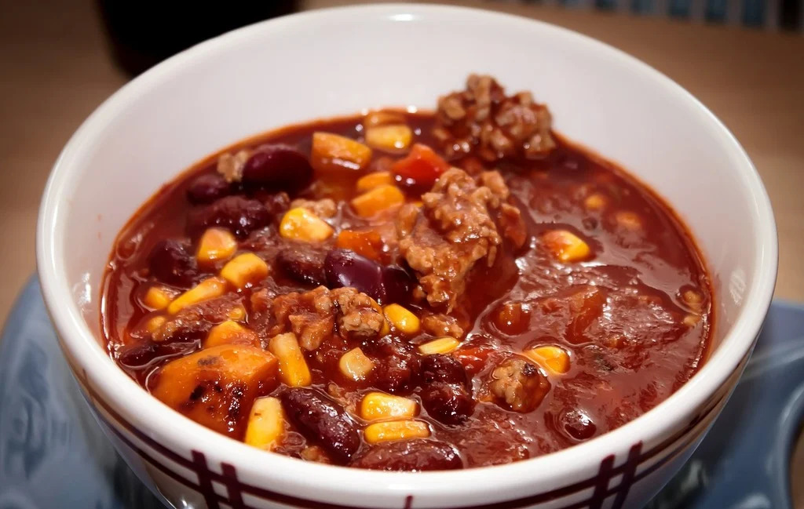

Description
A thick, hearty mix of ground beef, beans, corn, and salsa cooked slowly until everything blends together. It's warm, filling, and easy to make with just a few ingredients.
Ingredients
- 1 large container of mild salsa
- 1 can of corn
- 2 cans of mixed beans
- 1 medium package of ground beef
- 2 tbsps of chili powder
Steps
- Add the salsa, corn, beans and meat to a slowcooker in layers
- Mix it all up and season to taste
- Set slowcooker heat to high and cook for 8 hours
- Set to slowcooker to warm and serve